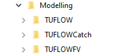
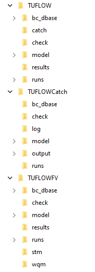
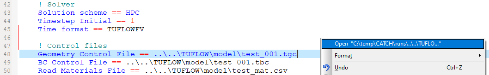
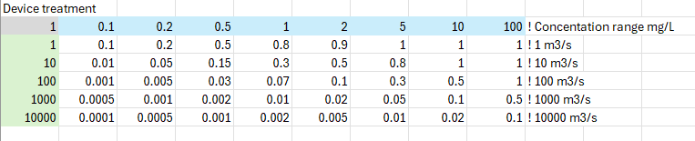
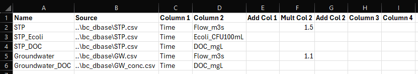

| Desired units system | Accumulation rate | Erosion rate | Map output concentration | TUFLOW FV BC concentration | Mass balance mass | Receiving polygon concentration |
|---|---|---|---|---|---|---|
| \(\mu\)g/L | g/ha/yr | mg/m\(^2\)/s | \(\mu\)g/L | \(\mu\)g/L | mg | \(\mu\)g/L |
| mg/L | kg/ha/yr | g/m\(^2\)/s | mg/L | mg/L | g | mg/L |
| g/L | t/ha/yr | kg/m\(^2\)/s | g/L | g/L | kg | g/L |
| CFU/100mL | CFU/ha/yr/10\(^5\) | CFU/m\(^2\)/s/10\(^2\) | CFU/100mL | CFU/100mL | CFUx10\(^3\) | CFU/100mL |
4 Simulation construction
4.1 Context
Previous sections have presented the architecture and processes available within TUFLOW CATCH. This section describes the usage intent and construction of a TUFLOW CATCH simulation. This includes the use of the TUFLOW QGIS plugin, descriptions of all commands, with hyperlinks to the Command Appendix (sec-AppCommands) where commands and explanations are listed for ease of access.
4.2 Usage intent
Depending on the chosen configuration, TUFLOW CATCH coordinates and executes TUFLOW HPC, and/or a pollutant export model and/or TUFLOW FV, all automatically and with no direct user input required to affect any of these linkages. This does not, however, mean that TUFLOW CATCH cannot be run until all models (TUFLOW HPC, pollutant export and TUFLOW FV) are fully constructed, even if the target configuration requires all these models eventually. To the contrary, the intention is that the single TUFLOW CATCH control file is used as the common control file for all model construction from project inception, even where this construction is undertaken in parallel by multiple users.
The reason for this approach is that, for example, the TUFLOW HPC block of the TUFLOW CATCH control file is nothing other than a standard TUFLOW HPC *.tcf control file, with a small number of additional TUFLOW CATCH commands. This is intentional, and means that an experienced (or beginner who refers to the TUFLOW user manual) TUFLOW HPC modeller can follow normal model set up processes and procedures to construct the TUFLOW HPC component of TUFLOW CATCH model, unhindered, but via the TUFLOW CATCH control file arrangement. The same logic applies to users constructing the TUFLOW FV sections of a TUFLOW CATCH model - the TUFLOW HPC sections of the TUFLOW CATCH control file can be turned off and TUFLOW FV model construction commenced as usual through the *.tcc rather than *.fvc control file. Users in teams that adopt this approach may want to consider using versioning control software to manage concurrent multiple user contributions.
It is understood that in some legacy cases, existing TUFLOW HPC or TUFLOW FV models (that were originally built outside TUFLOW CATCH) will need to be brought into a block of a TUFLOW CATCH control file. If this is the case, then the process is a matter of copying and pasting the original control files into the relevant TUFLOW CATCH control file block and populating the supporting folder structures with model data (see following sections). The key change that will be required on pasting into a *.tcc block will be to ensure file path references are correct (see following sections). This is only required from the *.tcc as it points to immediately called files, and no further down the folder tree.
4.3 Initialisation
TUFLOW CATCH requires construction of a suite of folder substructures to support simulations. These should be all co-located at the same folder level underneath a single directory that sits within an overall project directory. These substructures correspond to each of the three products potentially used in a TUFLOW CATCH simulation, and should be named as follows (with ‘TUFLOW’ referring to TUFLOW HPC):
- TUFLOW
- TUFLOWCATCH
- TUFLOWFV
Each of these substructures has its own subfolder arrangement, consistent with those suggested for standalone TUFLOW HPC and TUFLOW FV modelling studies. For consistency, the suggested TUFLOWCATCH subfolder arrangement is also similar.
To assist with this set up, and indeed more broadly with the initialisation, execution and results interrogation of a TUFLOW CATCH simulation, tools have been added to the freely available TUFLOW QGIS plugin:
- Instructions on installing the TUFLOW plugin is provided here.
Further resources related to using the TUFLOW plugin for TUFLOW CATCH are provided on the TUFLOW Wiki.
Documentation specifically for viewing results using the TUFLOW plugin is provided here: TUFLOW Viewer Documentation
4.4 General arrangement
4.4.1 Folder structure
The overarching TUFLOW CATCH folder structure created using the QGIS plugin will appear (at the first tier) as per Figure 4.1 (with the top level folder named ‘Modelling’ selected by the user during initialisation).

The expansion of these folders to one level is as per Figure 4.2. The commonality of folder structures should be evident.

The three relevant executable suites (TUFLOW CATCH, TUFLOW HPC and TUFLOW FV) should be stored in separate subfolders, but within a general EXE folder for neatness, e.g. C:\EXE\TUFLOWCATCH\2024.0\, C:\EXE\TUFLOW\2024.0\ and C:\EXE\TUFLOWFV\2024.0\. The use of version names in the directory structure is important as the TUFLOW software suite allows multiple versions to coexist on the same computer, provided the executable (.exe extension) and libraries (.dll and .ptx extensions) for a specific version are contained within their own sub-folder. The user downloaded version may differ from the examples and the version sub-folder name/s should be amended to reflect the downloaded version/s.
4.4.2 Intended workflow
The above folder structure supports the overall intended TUFLOW CATCH simulation workflow, such that:
- The TUFLOWCATCH folder (and control file, see below) is the single point of contact for execution of TUFLOW CATCH simulations, regardless of the combination of TUFLOW HPC or TUFLOW FV models being called
- All simulation results (again, regardless of what subsidiary TUFLOW products are called) are written to the TUFLOWCATCH/results subfolder: users should never need to navigate to TUFLOW HPC or TUFLOWFV output/results folders to examine results from TUFLOW CATCH simulations
- Users do not need to (and should not) set up their own *.tcf (TUFLOW HPC) or *.fvc (TUFLOW FV) top level control files in the respective TUFLOW and TUFLOWFV runs directories: TUFLOW CATCH does this automatically based on information provided in the overarching TUFLOW CATCH control file
- Calls to subsidiary first level control files and/or folders from the overarching TUFLOW CATCH control file for both TUFLOW HPC and TUFLOW FV (such as *.tgc (file), bc_dbase (folder) etc. (TUFLOW HPC) or *.fvsed etc. (TUFLOW FV)) need to be provided as relative paths to locations that sit within the respective TUFLOW or TUFLOWFV subfolder arrangements, from the TUFLOW CATCH runs directory
- All model data (e.g. grids, GIS, boundaries etc.) should be located within respective subfolder arrangements for TUFLOW and TUFLOW FV
- These first level control files (that sit within the TUFLOW or TUFLOWFV directory structures) then should be constructed to make the usual relative calls to all other files and data within respective their subfolder arrangements
- It is suggested that users exploit standard text editor capabilities of opening one text file (e.g. a *.tgc file) from from the currently open text file (i.e. the *.tcc) so as to not need to explicitly navigate between subfolder structures. This is most commonly achieved by right clicking on the relative path of the other file (e.g. *.tgc) as specified in the open text file (i.e. the *.tcc) and using the context menu to open the second file, as per Figure 4.3 (where the relative path on line 48 was right clicked)

In short, it is intended that the:
- TUFLOW CATCH control file is the primary point of construction and execution contact
- TUFLOW and TUFLOWFV folder substructures contain respective input model data such as GIS layers, DEMs etc
- TUFLOWCATCH folder substructure contains model results
Subsequent sections describe the TUFLOW CATCH control file set up and model execution.
4.5 TUFLOW CATCH control file
A TUFLOW CATCH simulation is set up and executed by constructing a TUFLOW CATCH control file, extension *.tcc. This file should reside in the TUFLOWCATCH\runs directory set up with the TUFLOW QGIS plugin. The user is not required to (and should not) construct separate *.tcf or *.fvc control files. This TUFLOW CATCH control file has four separate but related blocks:
- Global commands
- Catchment Hydraulic Model (TUFLOW HPC) commands
- Catchment Pollutant Export Model
- Receiving Model (TUFLOW FV) commands
All blocks must be included in the above order, but the latter three can be optionally switched on and off with a single command (rather than extensive line commenting) to suit modelling needs. For example, a user working only on initial TUFLOW HPC model build and testing tasks can turn off the pollutant export and TUFLOW FV blocks (by specifying these block models to be the keyword ‘None’) and continue building a TUFLOW HPC model as per normal, without the need to always execute all components of TUFLOW CATCH (See Catchment Hydraulic Model ==, Catchment Pollutant Export Model == or Receiving Model ==).
Construction of each of the TUFLOW CATCH control file blocks is described in the following sections.
4.5.1 Global commands
This initial section of the TUFLOW CATCH control file contains information that is applied equally to both TUFLOW HPC and TUFLOW FV. It is not declared as a block. These global commands are presented following (as hyperlinks to Appendix A), with command argument options also shown where appropriate. All commands are mandatory. Some commands can be overwritten if required within subsequent blocks (see Section 4.5.2 and Section 4.5.4).
Set the hardware to be used, with command arguments as either CPU or GPU:
Hardware ==
Set the GIS format to be used, with command arguments as either SHP (preferred) or GPKG:
GIS Format ==
Set projection to be used, as a path to a shape file. This will have been prepared by the TUFLOW plugin:
If GPKG is specified as the format and TUFLOW FV is intended to be included in the TUFLOW CATCH simulation then this will need to be overwritten in the receiving model block (see Section 4.5.4) because TUFLOW FV does not yet support geopackage based simulation. Similarly, if GPKG is set, then the projection must also be set as follows
Set the time format, with command arguments as either ISODATE (dd/mm/yyy hh:mm:ss) or hours (a single float). It is strongly recommended that ISODATE be used for longer simulations, where interpreting hour output timestamps can be difficult:
Time Format ==
Set the start and end times in the format declared above:
Start Time ==
End Time ==
Set the directory for simulation outputs (e.g. xmdf and NetCDF results files). This can be set to any location as either a full path (e.g. X:\Project\results), or as a path relative to the location of the TUFLOW CATCH control file (e.g. ..\results):
Set the directory for writing simulation check files (e.g. .shp files). This can be set to any location as either a full path (e.g. X:\Project\check), or as a path relative to the location of the TUFLOW CATCH control file (e.g. ..\check):
Set the directory for writing simulation log files. TUFLOW HPC and TUFLOW FV engine log files will be written to this location, as well as module log files (such as the water quality module of TUFLOW FV). This can be set to any location as either a full path (e.g. X:\Project\runs\log), or as a path relative to the location of the TUFLOW CATCH control file (e.g. log - which is the folder created by the TUFLOW plugin by default):
Log Folder ==
In order to collect all log files without name conflictions, TUFLOW CATCH renames the various log files before it writes them to the user nominated directory. The renaming convention is as follows:
- TUFLOW HPC related log files:
<TUFLOW CATCH tcc filename root>_catchment_hydraulic_***.t*f
- TUFLOW FV related log files:
<TUFLOW CATCH tcc filename root>_receiving_***.*log
where *** indicates a usual extension expected in a log file such as “messages” (for TUFLOW HPC) or “ext_cfl_dt” (for TUFLOW FV) etc. For example, for a TUFLOW CATCH control file called SysModel_001.tcc, the following log files might be produced (depending on simulation options)
- TUFLOW HPC related log files:
SysModel_001_catchment_hydraulic.hpc.tlfSysModel_001_catchment_hydraulic.tlfSysModel_001_catchment_hydraulic.tsf
- TUFLOW FV related log files:
SysModel_001_receiving_ext_cfl_dt.logSysModel_001_receiving.logSysModel_001_receiving.fvwqlog
Set the directory for writing the TUFLOW FV boundary condition files prepared by TUFLOW CATCH from TUFLOW HPC simulation, including boundary condition blocks and underlying data (timeseries) files. This command is required even if TUFLOW FV is not used in a TUFLOW CATCH simulation, in which case template TUFLOW FV files will be written to this location. TUFLOW CATCH also writes TUFLOW HPC diagnostic information to this location (regardless of whether TUFLOW FV is simulated), including timeseries files of predicted catchment-wide summed cumulative volumes and/or masses. These files can be useful for providing system understanding, even when TUFLOW FV is not activated. This directory should be always set as the bc_dbase folder within the TUFLOW CATCH folder substructure (as generated by the TUFLOW QGIS plugin), as a path relative to the location of the TUFLOW CATCH control file (i.e. ..\bc_dbase):
Set the timestep (in simulation time seconds) at which lines within a boundary condition file for TUFLOW FV (created from TUFLOW HPC predictions) are separated (required even if TUFLOW FV not used). TUFLOW CATCH offers the user the option to set this timestep differently for different types of TUFLOW FV boundaries: nodestrings (Q boundaries that deliver momentum to TUFLOW FV) and lateral inflows (QC boundaries that do not deliver momentum to TUFLOW FV). It would be typical that nodestring boundaries are written at a shorter timestep to lateral boundaries, but this is not mandated, and the user is able to decide how this timestep relates to simulation time and file size constraints. The second command below is also used to set the output frequency for Receiving Polygon inflows and concentrations output if used:
Catch BC Output Interval Nodestring == \(dT_{ns}\)
Catch BC Output Interval Lateral == \(dT_{lat}\)
Set the frequency at which TUFLOW CATCH pauses to write out TUFLOW FV boundary condition files, in units of days (simulation time, required even if TUFLOW FV not used). Setting a value of 1 means that TUFLOW CATCH will hold all boundary information in memory for a day of simulation time, and then update TUFLOW FV boundary files (and summed flow and mass timeseries) with this held memory on a daily basis. For example, if outputs were set to be hourly via either of the above interval commands, then 24 lines would be added to each boundary file at time of writing:
CSV Write Frequency Day == \(dT_{csv}\)
An example block of these global commands that together configure a TUFLOW CATCH simulation (with clarifying section headers as comments) is:
4.5.2 Catchment hydraulic model (TUFLOW HPC) commands
This block of the TUFLOW CATCH control file contains commands that construct a TUFLOW HPC simulation. These commands are almost entirely those that would be used in setting up a standalone TUFLOW HPC control file (*.tcf), with a small number of additional commands that relate to TUFLOW CATCH.
A number of commands issued in the Global commands section of the *.tcc can be overwritten here if needed. These are:
Hardware ==
GIS Format ==
If GIS Format is overwritten, then a subsequent new projection file is most likely required to be specified
If GPKG is specified as the GIS format then the projection must also be set as follows
The catchment hydraulic model definition must be declared as a block that encloses all TUFLOW CATCH and TUFLOW HPC commands. This is different to the global commands section at the top of the TUFLOW CATCH control file, which does not need this encompassing structure. Set the beginning of the block, with command arguments as either HPC or none, and the end of the block (with no command arguments):
Catchment Hydraulic Model ==
... catchment hydraulic model commands ...
... catchment hydraulic model commands ...
... catchment hydraulic model commands ...
End Catchment Hydraulic ModelIf the Catchment Hydraulic Model command is set to ‘None’, then catchment simulation is not executed, and TUFLOW FV will either:
- Read blank (interim) boundary condition files prepared by TUFLOW CATCH. This approach might be adopted for the initial stages of a TUFLOW FV model build, or dry period tidal / thermal stratification calibration of a receiving water, for example, or
- Read a suite of TUFLOW FV boundary condition files previously created by TUFLOW HPC, under TUFLOW CATCH running in Hydrology or Integrated configurations
The second approach above might be adopted when an initial Hydrology or Integrated simulation has been executed and a first pass corresponding suite of TUFLOW FV boundary condition files (that are not final, but at least sufficient for use in parallel preliminary TUFLOW FV calibration processes) has been produced. In this instance if:
TUFLOW CATCH run Model_003.tcc (for example) produced initial TUFLOW FV boundary files
The corresponding
..\TUFLOWCATCH\bc_dbase\Model_003_catchment_hydraulic.fvcatchbcfile could be copied as..\TUFLOWCATCH\bc_dbase\Model_004_catchment_hydraulic.fvcatchbcandCalled automatically in
Model_004.tccby a TUFLOW CATCH simulation that has Catchment Hydraulic Model == None.
This supports TUFLOW FV calibration tasks being executed, without relying on TUFLOW HPC. In order to avoid TUFLOW CATCH overwriting Model_003_catchment_hydraulic.fvcatchbc (which it would normally do if Catchment Hydraulic Model == None), the following command is required in the Receiving Model block of Model_004.tcc (the default is OFF)
Preserve Catchment Inflows == ON
This approach allows the TUFLOW HPC and TUFLOW modellers to progress independently for a time, gradually progressing their respectively calibrations without:
- Relying on each other to produce boundaries, and
- The need to continually rerun TUFLOW HPC to re-produce (identical) TUFLOW FV boundaries
This style of collaborative modelling is at the heart of TUFLOW CATCH’s architectural design intent and is a key use case.
The TUFLOW CATCH commands contained within this Catchment Hydraulic Model block are described following, and all are mandatory unless noted otherwise.
Set the directory from which TUFLOW CATCH controls TUFLOW HPC. Unless there is a need to the contrary, this should be set as a relative path to the TUFLOW\runs directory set up by the TUFLOW QGIS plugin, i.e. ..\..\TUFLOW\runs. Setting this to any other directory is not recommended:
Set the full or relative path to the location of the the TUFLOW HPC executable (including the name of the executable itself, with .exe extension) to be called by TUFLOW CATCH:
EXE ==
Set the time format for output results. Given that the intention of TUFLOW CATCH is that it support longer term environmental investigations (i.e. not short term detailed ‘traditional’ flood studies), results written in hours format can be difficult to interpret in terms of seasonality, for example. As such, TUFLOW HPC can be instructed to write results in the time format adopted by TUFLOW FV. Doing so is strongly recommended, especially if TUFLOW FV is using the ISODATE format rather than hours:
Time Format == TUFLOWFV
Set the relationship between hours and dates. TUFLOW HPC reads boundary condition files and executes its internal computations using an hours (rather than date) timestamp, although this is being upgraded in the mid term. In order to coordinate simulation with TUFLOW FV, and to output results in date format, TUFLOW CATCH requires specification of the date that corresponds to zero hours in TUFLOW HPC boundary (and other) files. This command specifies that date at which boundary and other files refer to zero hours. Note the date time format expected, and that the seconds field is excluded:
Zero Date == <dd/mm/yyyy hh:mm>
Set TUFLOW HPC to write TUFLOW CATCH related map outputs (e.g. pollutant and other hydraulic xmdf outputs, see Chapter 6). This catch command argument can be comma delimited with other outputs if required:
Output Map Data Types == catch
Not mandatory. If TUFLOW CATCH is to be deployed in the pollutant export configuration (i.e. with no immediate intention to deploy TUFLOW FV, see Section 1.3), then the following must be set:
The use of TUFLOW FV as a receiving model must be switched off. This is achieved by setting the receiving model block command as follows (see Section 4.5.4)
Receiving Model == None
AND
- A single layer (either as a standalone file or as part of a previously specified geopackage) that contains one or more polygons that cover the downstream receiving waters must be specified within the Catchment Hydraulic Model block. This layer does not need any specific attributes, and can be imported from the empties created by the TUFLOW QGIS plugin as a 2d_rp polygon type (it has one dummy attribute that is not used). The TUFLOW HPC cells within this polygon/s will be removed from the TUFLOW HPC simulation. TUFLOW CATCH will not write any TUFLOW FV boundary condition blocks, but will write:
Summary timeseries files that describe total water and pollutant mass fluxes entering the defined polygon/s, as a combined entity. These outputs can be useful for scenario to scenario comparisons, for example
Receiving Polygon == <path to polygon or geopackage reference>
AND
A list of comma separated pollutant names that are to be simulated by TUFLOW CATCH and the pollutant export model. Constant or timeseries pollutants are ignored - only pollutants that are specified within a material block (i.e. that wash off or erode) should be included in this list. These pollutants do not need to be TUFLOW FV keywords/names, and can be completely user defined. These names need to exactly match the names used within each material pollutant export block
Pollutant == <name1, name2, name3, …>
TUFLOW CATCH will error if operating in the pollutant export configuration and either of the above commands are missing.
Once specified, TUFLOW CATCH will check to ensure that all pollutants have been specified (no more, no less) across material blocks (see Section 4.5.3.3), and error if not.
Set the groundwater layers from which flows and loads will be used to develop TUFLOW FV boundary conditions, if multiple soil layers are used. In some instances (especially where deep groundwater is simulated), it may be desirable to include flow and loads only from upper soil layers, when compiling TUFLOW FV boundary conditions. The flexibility to do so avoids, for example, the unrealistic delivery of deeper groundwater flows from TUFLOW HPC to TUFLOW FV, where in reality these deeper flows might pass underneath the bed of the receiving model, rather than enter the model domain. To do so, the deepest soil layer number (inclusive) for which flows and loads are to be taken to compute TUFLOW FV inflow boundaries can be specified
Groundwater Boundary Threshold Layer == <layer number>
Flows and loads from deeper layers than specified using this command will exit the TUFLOW model.
Optionally, set the groundwater boundary condition at the TUFLOW HPC / TUFLOW FV boundary. The default option is Free Outflow, which assumes zero-gradient conditions for groundwater pressure level and velocity, allowing groundwater to exit the HPC model domain without imposing artificial resistance.
Groundwater Default Catch BC == Free Outflow | Zero Depth
Following the issuing of these specific TUFLOW CATCH commands, a TUFLOW HPC model can be constructed in the same manner as a standalone model. In this regard:
All TUFLOW HPC commands are recognised by TUFLOW CATCH and can be issued unchanged from the usage described in TUFLOW HPC’s manual and/or relevant release notes
TUFLOW HPC commands that reference other subsidiary control files (such as geometry control files, *.tgc etc.) need to use relative paths, and point to the locations with the TUFLOW directory created by the TUFLOW QGIS plugin, e.g.:
BC Database == ..\..\TUFLOW\bc_dbase\bc_dbase_001.csv
These subsidiary control files can then in turn use path references are per standalone TUFLOW HPC model construction (and point to locations within the same TUFLOW directory structure)
Variables can be set within the TUFLOW CATCH Catchment Hydraulic Model block for reference in any other subsidiary TUFLOW HPC files as per normal, e.g.:
Set Variable 2D_CELL_SIZE == 25
Scenarios and events can be set within the TUFLOW CATCH Catchment Hydraulic Model block for reference in any other subsidiary TUFLOW HPC file IF statements as per normal, e.g.:
Event == wet_year
Current limitations of the TUFLOW CATCH with regard to setting up TUFLOW HPC simulations include:
- Whilst events and scenarios can be manually defined and referenced (see above), dynamic assignment of same (using tilda notation in filenames etc.) is not yet supported. Each event or scenario will need a new TUFLOW CATCH control file
An example block of these Catchment Hydraulic Model block commands that together configure a TUFLOW HPC simulation within TUFLOW CATCH (with clarifying section headers as comments) is:
4.5.3 Catchment pollutant export model
This block of the TUFLOW CATCH control file contains commands that control pollutant export (and other constituent) simulation.
The catchment pollutant export model definition must be declared as a block that encloses all commands. This is analogous to the declaration of a catchment hydraulic model.
Set the beginning of the block, with command arguments as either ‘Mass Accumulation Release’ or ‘None’, and the end of the block (with no command arguments). The key phrase ‘Mass Accumulation Release’ activates all available pollutant export submodels. The keyword ‘None’ turns off pollutant export simulation and would be used with the Hydrology configuration (see Section 1.3) or if only TUFLOW FV calibration is being undertaken, for example:
Catchment Pollutant Export Model ==
... pollutant export model commands ...
... pollutant export model commands ...
... pollutant export model commands ...
End Catchment Pollutant Export ModelIf pollutant export is simulated, then all pollutants (and constituents) declared in the catchment hydraulic model (TUFLOW HPC via Pollutant ==) or receiving model (TUFLOW FV, and including all called modules such as Sediment Transport and Water Quality) must be accounted for with the correct name in the pollutant export block. Each must be assigned either:
- A constant value/concentration for application to receiving model boundary condition, or
- A timeseries value/concentration for application to receiving model boundary conditions, or
- A pollutant export model, with supporting parameters, for TUFLOW CATCH pollutant export simulation for every material
As such, not all the Catchment Pollutant Export Model block TUFLOW CATCH commands are mandatory, but, in combination, need to ensure that all pollutants are specified across the entire TUFLOW HPC domain.
4.5.3.1 Constant
Constant value/concentrations can be assigned when dynamic simulation is not required, such as for salinity or dissolved oxygen, for example. This specification is applied globally.
Set a constant value/concentration that is applied to downstream receiving model boundary condition files by TUFLOW CATCH. In doing so:
- The name needs to exactly match that configured by the receiving model (in TUFLOW CATCH’s integrated configuration) or set by the user (in TUFLOW CATCH’s pollutant export configuration), and
- The concentration needs to be in the same units expected by the receiving model (in TUFLOW CATCH’s integrated configuration) or expected by the user (in TUFLOW CATCH’s pollutant export configuration). For example, most constituents are specified in mg/L, however others, such as phytoplankton or temperature, are expected to be in units of \(\mu\)g/L and \(^o\)C, respectively. This constant user-specified value therefore needs to be in the correct units: it is simply written ‘as is’ into receiving model boundary condition files.
Constant <name> == <concentration to be applied>
4.5.3.2 Timeseries
Timeseries values/concentrations can be assigned for which dynamic simulation is not required, but which values/concentrations likely vary in time. This might include water temperature specification, for example. This specification is applied globally.
Set a timeseries that is applied to downstream receiving model boundary condition files by TUFLOW CATCH. In doing so:
- The name needs to exactly match that of variable configured by the receiving model, and
- The concentration needs to be in the same units expected by the receiving model (in TUFLOW CATCH’s integrated configuration) or expected by the user (in TUFLOW CATCH’s pollutant export configuration). For example, most constituents are specified in mg/L, however others, such as phytoplankton or salinity, are expected to be in units of \(\mu\)g/L or g/L, respectively. This user-specified timeseries therefore needs to be in the correct units: it is simply interpolated ‘as is’ into receiving model boundary condition files.
Time-Series <name> == <bc_name>
The <bc_name> field refers to a name declared in the TUFLOW HPC boundary condition database. For example, ‘temperature_davg’, with the corresponding database entry being (in a database simplified for this example):
Name,Source,Column 1,Column 2,Add Col 1,Mult Col 2,Add Col 2,Column 3,Column 4
temperature_davg,temperature_2021.csv,TUFLOW_Time,Airtemp,,,,,4.5.3.3 Pollutant export
Pollutant export models can be configured within TUFLOW CATCH to simulate the release of pollutants from the ground surface across the TUFLOW HPC model domain. This export is a core intention and capability of TUFLOW CATCH and can be configured as uniform or spatially varied across the TUFLOW HPC domain. Any nonuniform spatial definition uses the material numbers (and corresponding spatial distributions) already configured in the TUFLOW HPC model (i.e. the catchment hydraulic model block described above) and affects this through specification of material blocks in this part of the TUFLOW CATCH control file. These blocks are similar to those deployed by TUFLOW FV.
Configure default (or spatially uniform) pollutant export:
Material == ALL
... commands ...
... commands ...
... commands ...
End MaterialOnce these uniform conditions have been set, progressive specifications of material by material pollutant behaviour can be set. These specifications overwrite previous settings on a spatial basis. This stamping-style approach is akin to the way in which digital elevation model inputs can be progressively updated within TUFLOW HPC and TUFLOW FV by specifying a suite of elevation data that overwrite each other on a spatial basis. In the case of pollutant export properties, this stamping is affected by specifying subsequent material blocks that relate to individual or multiple materials. Up to ten comma separated materials can be specified in one material block:
Material == MatID1, MatID2, MatID3,,..., MatID10
... commands ...
... commands ...
... commands ...
End MaterialOnce all material specifications have been processed, TUFLOW CATCH will check that all pollutants have had all export properties specified for the entire TUFLOW HPC domain (i.e. every computational grid cell). This includes accounting for constant and timeseries specifications (which are global and do not need to be applied within material blocks). Using the ‘ALL’ command argument in the first material block specified and providing information for every pollutant required within that block (and then progressively spatially refining) ensures this will be true. Once the initial uniform material specification has been made, not every pollutant needs to be specified in every subsequent material block - only alterations to the uniform conditions need be made.
Each line within a material block contains a suite of arguments after the pollutant name (in the form command == argument, command == argument, … etc.), the first of which is always a keyword flagging the model to be used. Although there are some commonalities in subsequent inline commands, these differ according to the pollutant export model specified, as follows. Different pollutant export models can be specified for different pollutants within the same material block if required. The same pollutant export model should be applied to a given pollutant across all materials, albeit with different parameters.
4.5.3.3.1 Accumulation and washoff
Set the model and parameters for the pollutant accumulation and washoff model (see Section 3.2.3.1). All parameters are mandatory:
<name>, Method == Washoff1, Rate == \(R_a\), Limit == \(L_{acc}\), Time Constant == \(T_c\), Rain Threshold == \(R_r\), Depth Threshold == \(d\), Deposition Velocity == w_s
The <name> field must correspond to a name designated by TUFLOW FV. The parameters are:
- Method: keyword ‘Washoff1’ that activates the accumulation washoff model
- Rate: the areal rate at which the pollutant accumulates (kg/ha/year)
- Limit: the maximum areal mass that can accumulate in the dry store (kg/ha)
- Time Constant: a time parameter controlling the pollutant dry store release rate, according to Equation 3.1 (s)
- Rain Threshold: the minimum rain rate required to activate release from the dry store (mm/hr)
- Depth Threshold: the minimum water depth in a cell required to activate release from the dry store (m)
- Deposition Velocity: the velocity at which pollutant in the wet store settles. Used to calculate the mass of pollutant transferred back from the wet to dry store in a model timestep, according to Equation 3.2 (m/day)
An example for dissolved organic carbon might be:
WQ_DOC_MG_L, Method == Washoff1, Rate == 21.446, Limit == 21.446, Time Constant == 3600, Rain Threshold == 1.0, Depth Threshold == 0.020, Deposition Velocity == 0.04.5.3.3.2 Shear stress
Set the model and parameters for the shear stress model (see Section 3.2.3.2). All parameters are mandatory:
<name>, Method == Shear1, Rate == <not used>, Limit == \(L_{shr}\), Depth Threshold == \(d\), Deposition Stress == \(\tau_{cd}\), Erosion Stress == \(\tau_{ce}\), Deposition Velocity == w_s, Erosion Rate == \(E_r\)
The <name> field must correspond to a name designated by TUFLOW FV. The parameters are:
- Method: keyword ‘Shear1’ that activates the shear stress model
- Rate: not used, but listed for consistency
- Limit: the maximum erosion or deposition that can occur in a cell. Always a positive number (kg/ha)
- Depth Threshold: the minimum water depth in a cell required to activate release from the dry store (m)
- Deposition Stress: the maximum shear stress for which deposition can occur. Shear stresses below this limit will allow for deposition to occur, according to Equation 3.4. Should always be less than the specified erosionStress (N/m\(^2\))
- Erosion Stress: the minimum shear stress for which erosion can occur. Shear stresses above this limit will allow for erosion to occur, according to Equation 3.3. Should always be greater than the specified depositionStress (N/m\(^2\))
- Deposition Velocity: the velocity at which pollutant in the wet store settles. Used to calculate the mass of pollutant transferred back from the wet to dry store in a model timestep, according to Equation 3.4 (m/day)
- Erosion Rate: The maximum rate of erosion of pollutant from the dry store, if erosion conditions are met, according to Equation 3.3 (g/m\(^2\)/s)
An example for suspended sediment might be:
SED_TSS, Method == Shear1, Rate == 0.0, Limit == 1000.0, Depth Threshold == 0.02, Deposition Stress == 0.01, Erosion Stress == 0.5, Deposition Velocity == 1.0, Erosion Rate == 0.002An example for a complete material block might be:
Material == 1, 4
SED_TSS, Method == Shear1, Rate == 0.0, Limit == 1000.0, Depth Threshold == 0.02, Deposition Stress == 0.01, Erosion Stress == 0.5, Deposition Velocity == 1.0, Erosion Rate == 0.001
WQ_DOC_MG_L, Method == Washoff1, Rate == 21.446, Limit == 21.446, Time Constant == 3600, Rain Threshold == 1.0, Depth Threshold == 0.020, Deposition Velocity == 0.0
End Material4.5.3.3.3 Units
TUFLOW CATCH has been configured to allow for the concurrent simulation of several unit systems, with different unit systems deployed for different pollutants. This is by design and reflects the diversity of commonly accepted unit systems across the water quality modelling discipline. For example, concentrations of nutrients are typically (but not always) thought of in units of mg/L, whilst those of phytoplankton are typically referred to in \(\mu\)g/L. TUFLOW CATCH accounts for this variation in unit systems and offers complete flexibility in this regard. The available unit systems are:
- mg/L (the most commonly used and TUFLOW CATCH default)
- g/L
- \(\mu\)g/L, and
- CFU/100mL
Start: Experimental feature subject to change
The way in which a unit system is selected for a given constituent is simply by setting the correct units of the accumulation rate or erosion rate. TUFLOW CATCH does not need to be instructed explicitly as to the units it is being configured to simulate (except in the case of interventions, see Section 4.5.3.5.3). Rather, it is a responsibility of the user to set the correct accumulation or erosion rate units per pollutant (different units can be used for different exported pollutants) to ensure that TUFLOW CATCH produces the corresponding and expected:
- Advected surface and subsurface quantities:
- Concentrations in map outputs (Section 6.2.2.2 and Section 6.2.3.2)
- Concentrations in downstream TUFLOW FV Inflow Boundary Condition files
- Concentrations in Mass Balance output files
- Masses in Receiving Polygon summary files
- Dry store quantities
- Dry mass (Section B.3)
- Net mass (Section B.4)
The above are implicitly linked: the units set for accumulation or erosion rates subsequently set the manner in which the units of the above quantities are to be interpreted. This linkage is presented in Table 4.1 and Table 4.2 for advected and dry store quantities, respectively. The user selected units are in pink and the units that follow for the various different outputs are in green.
| Desired units system | Accumulation rate | Erosion rate | Dry store mass | Net mass |
|---|---|---|---|---|
| \(\mu\)g/L | g/ha/yr | mg/m\(^2\)/s | g/ha | g/ha |
| mg/L | kg/ha/yr | g/m\(^2\)/s | kg/ha | kg/ha |
| g/L | t/ha/yr | kg/m\(^2\)/s | t/ha | t/ha |
| CFU/100mL | CFU/ha/yr/10\(^5\) | CFU/m\(^2\)/s/10\(^2\) | CFU/ha/10\(^5\) | CFU/m\(^2\)/10\(^2\) |
As an example, if a particular pollutant was to be simulated using the Washoff1 method and the desired units system was mg/L, then the accumulation rate would need to be specified in kg/ha/yr. As such, if a user found an accumulation rate in the literature of (say) 42.0 kg/ha/yr for that pollutant, then this number should be specified unchanged as an accumulation rate in TUFLOW CATCH, and all concentration units would then be in mg/L as per Table 4.1. If however, for the same pollutant, the g/L units system was desired, then the literature value of 42.0 would need to be specified in t/ha/yr in TUFLOW CATCH, that is, as a value of 0.042.
As a further example, if a particular pathogen was to be simulated using the Washoff1 method and the desired units system was CFU/100mL, then the accumulation rate would need to be specified in CFU/ha/yr, divided by 10\(^5\). As such, if a user found an accumulation rate in the literature of (say) 10\(^{11}\) CFU/ha/yr for that pathogen, then this number should be specified as 10\(^{6}\) as an accumulation rate in TUFLOW CATCH, and all concentration units would then be in CFU/100mL as per Table 4.1.
Units associated with pollutants assigned via the commands:
Constant <name> == float
or
Time-Series <name> == <name>
are not included in map, mass balance or polygon outputs as they are not simulated explicitly by TUFLOW CATCH. They are only written to TUFLOW FV boundary condition files, and as the absolute number or timeseries specified by the user. It is therefore a user responsibility to make sure that the number or timeseries specified is in the correct unit system expected by TUFLOW FV. For example, if blue green algae were set as constant and the command issued:
Constant WQ_PHYTO_BLUEGREEN_CONC_MICG_L == 4.0
then the number 4.0 is written to all TUFLOW FV boundary condition files, and interpreted by TULFOW FV as 4.0 \(\mu\)g/L. No other outputs for WQ_PHYTO_BLUEGREEN_CONC_MICG_L are written. If temperature is set as a timeseries, for example, then it should be in degrees Celsius, as expected by TUFLOW FV.
As a general note, users need to be clear on units used, and the translation of these through a modelling framework. This is especially the case when comparing model predictions to scheduled water quality objectives or conducting mass balance analyses - in such cases understanding of the units used is essential.
End: Experimental feature subject to change
Users are encouraged to undertake their own reviews and specifications of pollutant accumulation and erosion rates, and associated TUFLOW CATCH configurations. Notwithstanding this, some indicative pollutant accumulation rates are provided in Table 4.3, corresponding to the default mg/L units system. These are not to be seen as endorsed or recommended by TUFLOW, but are provided for information only, for a range of common pollutants. Decimal places are not intended to imply precision.
| Pollutant | Lower estimate (kg/ha/yr) | Upper estimate (kg/ha/yr) |
|---|---|---|
| Sediment | 55.0 | 300.0 |
| Ammonium | 0.2 | 2.0 |
| Nitrate | 0.5 | 3.0 |
| Filterable Reactive Phosphorus | 0.01 | 0.03 |
| Dissolved Organic Nitrogen | 1.0 | 2.0 |
| Particulate Organic Nitrogen | 1.0 | 3.0 |
| Dissolved Organic Phosphorus | 0.01 | 0.05 |
| Particulate Organic Phosphorus | 0.06 | 0.6 |
| Dissolved Organic Carbon | 20.0 | 70.0 |
| Particulate Organic Carbon | 12.0 | 40.0 |
4.5.3.4 Pollutant transport
4.5.3.4.1 Surface
Once released, pollutants are transported in the surface. Pollutants are treated as passive tracers and do not undergo non-conservative transformation, other than that allowed by the pollutant export models described above and that due to the action of interventions (see Section 4.5.3.5).
4.5.3.4.2 Subsurface
If soils have been included in the TUFLOW HPC simulation and infiltration of water occurs, then this water takes with it any previously released pollutants and continues to advect these in the subsurface as it does water. Similarly, if TUFLOW HPC predicts that water travelling in soil layers intersects the ground surface, then any included pollutants are returned to the surface wet store and advected and dispersed as normal. If a particular pollutant is not required to infiltrate from the surface to subsurface, then this infiltration can be turned off (default is on). This is intended to be set as off for particulate pollutants, although is user definable:
Infiltration <name> == OFF
4.5.3.4.3 Units
The units of the concentrations reported due to pollutant transport for both surface and subrface accord with the commentary provided in Section 4.5.3.3.3 and are the same as those written to boundary condition files.
4.5.3.5 Interventions
Once released and transported, pollutant mass can be removed at user specified rates and locations due to the action of intervention devices (see Section 3.3). Intervention devices are specified as polylines (via importing the empty layer ‘2d_im_’) with a single required attribute, being device name (attribute ‘ID’ - other fields are included but are not used).
Read GIS Intervention == <path to GIS polyline file>
Any number of these commands can be issued, and all intervention devices need not be in a single GIS layer.
Once spatially specified, parameterised mass removal methods for each pollutant within each device are required. This is achieved through specifying device blocks, with one block for each device. The general arrangement of these blocks follows.
Device == ALL | Device name
... commands ...
... commands ...
... commands ...
End DeviceEach such block commences and ends with Device == and End Device keywords, respectively.
To avoid repetition, it is recommended that a blanket device block be issued initially using the device name ‘ALL’. The content of this block is applied to all devices, and this can then be refined and overwritten by progressive device-specific block commands. This stamping-style approach is akin to the way in which digital elevation model inputs can be progressively updated within TUFLOW HPC and TUFLOW FV by specifying a suite of elevation data that overwrite each other on a spatial basis. In the case of intervention device properties, this stamping is affected by specifying subsequent device blocks that relate to individual devices.
Each line within a device block contains information on mass removal for a given pollutant. A suite of arguments follow the pollutant name (in the form command == argument, command == argument, … etc.), the first of which is always a keyword flagging the mass removal model to be used. Different mass removal models can be specified for different pollutants within the same device block. Different mass removal models can also be applied to a given pollutant across different devices. Although there are some commonalities in subsequent inline commands, these differ according to the mass removal model specified, as described in the following sections.
4.5.3.5.1 Equation
4.5.3.5.1.1 Constant
Set the model and parameters for the constant equation model (see Section 3.3.1.1.1). All parameters are mandatory:
The <name> field must correspond to a pollutant name. The parameters are:
- Method: keyword ‘Eqn’ that activates an equation based mass removal model. The number of available Eqn models may expand in future
- Eqn: the specific equation based model used (‘Constant’ in this case)
- Coefficients: the proportion (0.0 - 1.0) of pollutant mass removed ([-])
An example for dissolved organic carbon removal by a device at 60% mass flux removal (i.e. 40% pass through) is:
WQ_DOC_MG_L, Method == Eqn, Eqn == Constant, Coefficients == 0.64.5.3.5.1.2 Other
Other equation based models may or may not be added in future. Contact support@tuflow.com with requests or suggestions.
4.5.3.5.2 Table
Set the model and parameters for the table model (see Section 3.3.1.2). All parameters are mandatory:
<name>, Method == Table, Path == <Path to table>
The <name> field must correspond to a pollutant name. The parameters are:
- Method: keyword ‘Table’ that activates a table based mass removal model
- Path: the file path to the table to be used for mass removal
An example for dissolved organic carbon removal might be:
WQ_DOC_MG_L, Method == Table, Path == ..\bc_dbase\Wetland1_removals.csvThe format of the removal table is as follows, with all entries being comma separated values. Formats are provided in angled brackets, and all \(R_j\) vales are between 0.0 and 1.0:
Header line <free text>
Multiplier, conc_1, conc_2, conc_3, ... < real, real, real, real, ... >
Flow_1, R_j, R_j, R_j, ... < real, real, real, real, ... >
Flow_2, R_j, R_j, R_j, ... < real, real, real, real, ... >
Flow_3, R_j, R_j, R_j, ... < real, real, real, real, ... >
Flow_4, R_j, R_j, R_j, ... < real, real, real, real, ... >
...An example is presented in Figure 4.4. The usual exclamation points are used to comment text and the colour coding is not required but is included to illustrate:
- Grey: Multiplier
- Blue: Concentration headers
- Green: Flow headers
The (positive value) multiplier is applied to all \(R_j\) entries uniformly and can be used to easily scale all \(R_j\) entries up and down equally, without needing to manually adjust individual entries. Beware of applying a scaling that increases \(R_j\) entries above 1.0 - TUFLOW CATCH will error and stop if this occurs. TUFLOW CATCH will interpolate linearly between column and row headers to compute the exact values of \(R_j\) based on environmental conditions.

4.5.3.5.3 Units
Start: Experimental feature subject to change
Intervention mass removal is computed on a proportional mass basis. This means that for the:
- Eqn == Constant method, the pollutant units are not explicitly required to be known by TUFLOW CATCH in applying the pre-specified \(R_j\)
- Method == Table method that uses a csv lookup table to select \(R_j\), the units of concentration specified in the csv table header row need to be in the same units as intended by the user (see blue highlighted values in Figure 4.4). It is the users responsibility to ensure this is the case
The only requirement beyond the above, and this applies only if interventions are simulated, is that the user instruct TUFLOW CATCH as to the intended units system for a given pollutant if it is not mg/L (mg/L is the default). This is because TUFLOW CATCH uniformly reports removals of pollutants due to the action of interventions in grams and CFU. As such, TUFLOW CATCH needs to know the absolute units of concentrations advected into interventions to do so. This is affected via the following command:
Units <name> == <arg>
This command is issued within a pollutant export block (not within an individual intervention block). The <name> field must correspond to a pollutant name. The arguments are MGL, GL, MICGL or CFU100ML.
As an example for POLLUTANT_A (intended to be simulated in g/L):
Units POLLUTANT_A == GLThis would mean that:
- The units of concentration specified in the top row of an intervention table (if used) are expected to be g/L, and
- The absolute mass removed will still be reported in units of grams (see Section 6.4)
End: Experimental feature subject to change
4.5.3.6 Non-hydrologic surface loads
Non-hydrologic pollutant flows and loads can be specified at any location within the TUFLOW model domain using point, line or region GIS geometry types (via empty layer ‘2d_sa_’). These geometry features can be digitised such that they correspond to actual on ground locations, and as such treat all (and only) water flowing through these locations - lumped subcatchment assumptions are avoided.
Whilst the related commands are specified within the Pollutant Export block of a TUFLOW CATCH control file, they are those already in use in other TUFLOW products as ‘SA’ inflows. The hyperlink on the command below therefore points to the relevant information in the TUFLOW Classic/HPC User manual, and this can be followed directly, with the caveat that only the ‘ALL’ option described in the TUFLOW/HPC manual is supported by TUFLOW CATCH.
Read GIS SA == <path to GIS file>
Any number of these commands can be issued, and all non-hydrologic inflows of a given geometry type (point, line or region) need not be in a single GIS layer. The only attribute required by the 2d_sa_ GIS layer for each feature is <Name>. This can be any name the user desires, although the use of spaces and special characters is to be avoided.
Once GIS features have been created and assigned names, TUFLOW CATCH requires that each feature be associated with:
- [Mandatory] A flow timeseries
- [Optional] A pollutant concentration timeseries for each pollutant wishing to be associated with the above flow. It is not mandatory that every pollutant be assigned a concentration timeseries. If no pollutant concentration is assigned then it will assumed to be zero
This association is affected by entries to the TUFLOW bc_dbase file, which is described here in the TUFLOW Classic/HPC manual. The same column headers are used by TUFLOW Classic/HPC and TUFLOW CATCH, and these are used by TUFLOW CATCH as follows (bc_dbase header names are bolded):
- [Mandatory for every GIS feature] Flow specification:
- Mandatory:
- Name: Name given to a point, line or region GIS feature in 2s_sa_ GIS layer
- Source: Filename of csv file that contains flow timeseries data
- Column1: Header of column in csv timeseries file corresponding to time in TUFLOW hours (ISODATE is not supported)
- Column2: Header of column in csv timeseries file corresponding to flow rate (m\(^3\)/s)
- Optional:
- Add Col 1: Value to add to time column
- Mult Col 2: Value to multiply flow column
- Add Col 2: Value to add to flow column
- Column3, Column4: unused
- Mandatory:
- [Optional for every GIS feature] Concentration specification:
- Mandatory (if used for a pollutant):
- Name: A ’_’ concatenation of the
- Name given to a point, line or region GIS feature in 2s_sa_ GIS layer, and
- Name given to the relevant pollutant
- Source: Filename of csv file that contains concentration timeseries data
- Column1: Header of column in csv timeseries file corresponding to time in TUFLOW hours (ISODATE is not supported)
- Column2: Header of column in csv timeseries file corresponding to concentration rate (m\(^3\)/s)
- Name: A ’_’ concatenation of the
- Optional:
- Add Col 1: Value to add to time column
- Mult Col 2: Value to multiply concentration column
- Add Col 2: Value to add to concentration column
- Column3, Column4: unused
- Mandatory (if used for a pollutant):
An example of a bc_dase file is presented in Figure 4.5 for a TUFLOW CATCH model with:
- GIS features:
- One point feature inflow with name attribute ‘STP’
- One region feature inflow with the name attribute ‘Groundwater’
- Pollutants:
- EColi (from STP only)
- DOC (from STP and Groundwater)

Some features of this file include:
- All GIS feature names and pollutants are concatenated with a ’_’
- Groundwater has no concentration entry for EColi, so that pollutant will be assigned zero concentration for the groundwater inflow
- The groundwater entries call different csv files
- Flow multipliers have been applied to both features
- The headers are user defined in each csv file, and have included units (e.g. DOC_mgl)for clarity but this is not mandatory
4.5.3.6.1 Units
Start: Experimental feature subject to change
The units used for all non-hydrologic flows and loads are:
- Flow: m\(^3\)/s
- Concentration: As per the ‘Map output concentration’ column in Table 4.1
An example all the above Pollutant Export Model block commands within TUFLOW CATCH (with clarifying section headers as comments), including interventions is:
4.5.4 Receiving model (TUFLOW FV) commands
This block of the TUFLOW CATCH control file contains commands that construct a TUFLOW FV simulation. These commands are almost entirely those that would be used in setting up a standalone TUFLOW FV control file (*.fvc), with a small number of additional commands that relate to TUFLOW CATCH.
A small number of commands issued in the Global commands section of the *.tcc can be overwritten here if needed (for example if GPKG had been specified in the Global commands for the GIS format). These are:
Hardware ==
GIS Format ==
If GIS Format is overwritten (as SHP), then a subsequent new projection file is most likely required to be specified
The receiving model definition must be declared as a block that encloses all TUFLOW CATCH and TUFLOW FV commands.
Set the beginning of the block, with command arguments as either TUFLOWFV or none, and the end of the block (with no command arguments):
Receiving Model ==
... receiving model commands ...
... receiving model commands ...
... receiving model commands ...
End Receiving ModelIf the Receiving Model command is set to none, then receiving simulation is not executed. This approach might be adopted for the initial stages of a TUFLOW HPC model build, for example. The TUFLOW CATCH commands contained within this Receiving Model block are described following, and all are mandatory unless noted.
Set the directory from which TUFLOW CATCH controls TUFLOW FV. Unless there is a need to the contrary, this should be set as a relative path to the TUFLOWFV\runs directory set up by the TUFLOW QGIS plugin, i.e. ..\..\TUFLOWFV\runs. Setting this to any other directory is not recommended:
Set the full or relative path to the location of the the TUFLOW FV executable (including the name of the executable itself, with .exe extension) to be called by TUFLOW CATCH:
EXE ==
All TUFLOW FV boundary condition files generated by TUFLOW CATCH are QC type (cell inflow, ‘lateral’, and do not transfer momentum to TUFLOW FV) unless specified otherwise as nodestring (Q type, and do transfer momentum to TUFLOW FV) inflows. All such nodestring inflows need to be drawn as line type objects in a single GIS file and this file declared in the receiving model block as:
Catchment BC Nodestring == <path to GIS nodestring file>
If TUFLOW FV is being executed alone using previous inflow boundaries created by TUFLOW HPC, then the following command will ensure that those previous boundaries are not overwritten. The name of the .fvcatchbc file produced by a previous TUFLOW HPC simulation needs to be renamed to match the name of the subsequent TUFLOW CATCH simulation calling only TUFLOW FV. In this instance if:
TUFLOW CATCH run Model_003.tcc (for example) produced initial TUFLOW FV boundary files
The corresponding
..\TUFLOWCATCH\bc_dbase\Model_003_catchment_hydraulic.fvcatchbcfile could be copied as..\TUFLOWCATCH\bc_dbase\Model_004_catchment_hydraulic.fvcatchbcandCalled automatically in Model_004.tcc by a TUFLOW CATCH simulation that has Catchment Hydraulic Model == None
Preserve Catchment Inflows == ON
Following the issuing of these specific TUFLOW CATCH commands, a TUFLOW FV model can be constructed in the same manner as a standalone model. In this regard:
All TUFLOW FV commands are recognised by TUFLOW CATCH and can be issued unchanged from the usage described in TUFLOW FV’s manual and/or relevant release notes
TUFLOW FV commands that reference other subsidiary control files (such as geometry control files, *.tgc etc.) or GIS files need to use relative paths, and point to the locations with the TUFLOWFV directory created by the TUFLOW QGIS plugin, e.g.:
Sediment Control File == ..\..\TUFLOWFV\stm\Demo.fvsed
These subsidiary control files can then in turn use path references are per standalone TUFLOW FV model construction (and point to locations within the same TUFLOWFV directory structure)
Include command calls are supported, as relative references to the TUFLOWFV folder should be used
An example block of these Receiving Model block commands within TUFLOW CATCH (with clarifying section headers as comments) is:
4.6 Construction summary
4.6.1 Supported configurations
The following presents a summary of the combinations of block level commands that will trigger the core supported TUFLOW CATCH configurations. Only block level commands have been included, unless specific internal commands are relevant.
4.6.1.1 Hydrology
For simulation of water only (refer to TUFLOW CATCH Tutorial Model 3 for a model demonstration):
If temperature and salinity (or either) are to be simulated:
4.6.1.2 Pollutant export
Refer to TUFLOW CATCH Tutorial Model 1 for a model demonstration.
4.6.1.3 Integrated
Refer to TUFLOW CATCH Tutorial Model 4 for a model demonstration.
4.6.2 Other configurations
The following presents a summary of the combinations of block level commands that will trigger the alternative TUFLOW CATCH configurations that might be used during model construction and calibration. Only block level commands have been included, unless specific internal commands are relevant.
4.6.2.1 TUFLOW HPC calibration only
Alternatively, a TUFLOW CATCH simulation in Pollutant Export configuration could be set up, with only a constant and zero salinity set. Because this constant is not simulated in the TUFLOW HPC domain, doing so will not adversely affect TUFLOW HPC run times. It will, however, allow for specification of a receiving polygon to let water out of the TUFLOW HPC domain at a location well downstream of calibration comparison gauges.
4.6.2.2 TUFLOW FV calibration only
The above will assign blank inflows to TUFLOW from the TUFLOW HPC domain. If TUFLOW FV is to use previously created inflow boundaries from TUFLOW HPC (via TUFLOW CATCH) then the following should be used, after copying the previously created .fvcatchbc file, for example:
TUFLOW CATCH run Model_003.tcc (for example) produced initial TUFLOW FV boundary files
The corresponding
..\TUFLOWCATCH\bc_dbase\Model_003_catchment_hydraulic.fvcatchbcfile could be copied as..\TUFLOWCATCH\bc_dbase\Model_004_catchment_hydraulic.fvcatchbcandCalled automatically in
Model_004.tcc